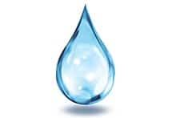

Река Рио-Тинтио

Эта удивительная река за тысячелетия промышленной деятельности человека превратилась в мертвую реку, или как её называют "ручеёк кислоты". Уровень кислотности здесь крайне высок. Чтобы вы понимали, этот показатель сильнее, чем у концентрированного лимонного сока и бытового уксуса. Воды Рио-Тинтио имеют насыщенный красный оттенок, это обусловлено солями железа и других металлов, растворяемых водами реки в отработанных шахтах.
Далее